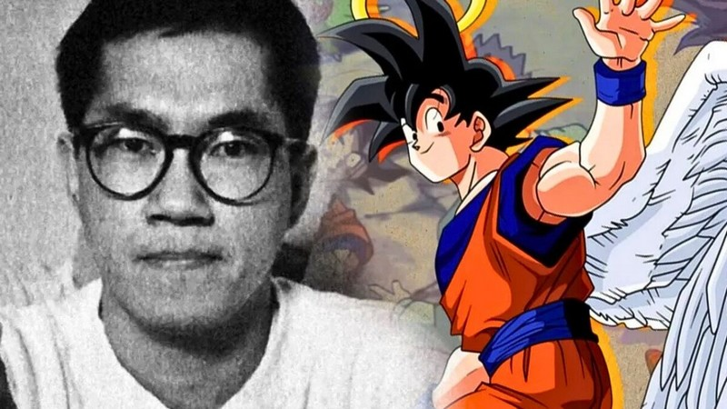

SON HISTOIRE
Akira Toriyama, né en 1955 à Kiyosu, c'est le gamin qui passait ses journées à gribouiller des animaux, des voitures et tout ce qui l'inspirait. Après des études de design et un passage éclair dans la pub (qu'il quitte en mode "ce n'est clairement pas pour moi"), il se lance vraiment dans le manga.
Au début des années 80, il enchaîne quelques échecs, puis signe Dr Slump, une pépite d'humour et de SF qui le propulse instantanément au sommet.
En 1984, il crée Dragon Ball, et là… le monde bascule. Son mélange unique d'aventure, de kung-fu, de gags et de personnages inoubliables pose les fondations du shōnen moderne.
En parallèle, Toriyama dessine pour les jeux vidéo (Dragon Quest, Chrono Trigger, Blue Dragon…), crée des one-shots brillants (Cowa!, Sand Land, Jaco), et continue de travailler dans son atelier, loin des caméras, entouré d'animaux, de modèles réduits et de son imagination sans limites.
Il s'éteint en 2024, laissant derrière lui une galaxie entière d'œuvres qui continuent de vivre.